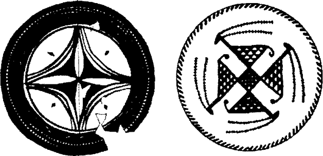

Arkeolojik araştırmalar içinde son zamanların en ilginç gelişmelerinden biri Yakındoğu’da sürekli ilerleyen kazılar olmuştur. En eski neolitik kültür formlarının köken ve yayılımı yolları konusunda bu bölge odak noktası olmaktadır. Konumuzla ilgili ana bulgulardan söz edersek, dünyanın gelişmiş uygarlıklarının temel biçimi olan tahıl tarımı ve sığır yetiştiriciliği ilk kez İÖ 7500-4500 yılları arasında Yakındoğu’da ortaya çıkmıştır. Çok daha yetersiz beslenen avcı toplayıcı kültürlerin yerini alan hayvancılık ve tarımcılık, geniş alanlar halinde doğu ve batıya yayılarak, İÖ 2500 civarında Asya’da Pasifik kıyısına, Avrupa ve Afrika’da Atlantik kıyısına ulaşmıştır. Bu arada çekirdek merkezde yeni bir gelişme yaşanmış, İÖ y. 3500-2500’ler arasında arkaik yüksek uygarlıkların temel öğeleri ortaya çıkmıştır -yazı, tekerlek, matematik, takvim, krallık, ruhbanlık, tapınak simgeciliği, vergi, vb. Bu ikinci gelişime özgü mitolojik temalar göreli olarak çok daha hızlı yayılmış, yarattıkları teknolojik etkilerle birlikte zaten açılmış olan yollardan tekrar Atlantik ve Pasifik kıyılarına ulaşmıştır.
Toplumda yaşanan kökten dönüşümün ilk aşaması, Dorothy Garrod’un Filistin’de Karmel Dağı denilen yerdeki mağaralarda 1920’lerin ortalarında yaptığı bir dizi keşifle ortaya çıkarıldı.179 Onun bulduğu eserlere benzer eserler o zamandan beri Mısır’da Helvan kadar güneyde ve Beyrut, Yabrud kadar kuzeyde, Irak Kürt dağlarına kadar doğuda da keşfedildi. Bu sanayi şimdi arkeologlarca Natufian diye adlandırılıyor ve İÖ 8000-5000 yılları arasında bu bölgelerde ortaya çıkmış olmalı. Tarihleme halen kesin değil.180 Belirsiz biçimde tanımlanan bu döneme proto-neolitik diyebiliriz, gelişim aşaması da ‘geçici toplayıcılık’. Bulunan malzemeden son dönem paleo-mikrolitik türde zengin çakmak taşı ve kemik kırıntılarıyla, henüz köyler kurmamış, ama yine de bazı tahıl türleri tüketen avcı kabileler grubuyla karşı karşıya olduğumuz anlaşılmaktadır. Buluntular arasında çok fazla sayıda taştan yapılma orak ağızları vardır ve bunlarla hasat yapıldığı görülmektedir. Sayısız domuz, keçi, koyun, öküz ve benzerleri kemikler bize Natufianlıların hayvanları evcilleştirmemiş bile olsalar sonradan bütün gelişmiş kültürlerin önde gelen evcil hayvanlarını oluşturacak olan türleri tükettiklerini göstermektedir. Yaşam biçimleri, toplayıcılıkla tarımcılık arasındaki geçiş dönemindedir.
Tarımcıların temel sanatlarının kökeniyle ilgili arkeolojik sorunun özü gene de yanıtlanmadan duruyor. Yakındoğu gerçekten tarımcılık ve hayvancılığa doğru ilk adımın atıldığı yer mi yoksa yalnızca başka bir yerde geliştirilen fikir ve öğeleri benimseyen göçebe avcıların oluşturduğu çevre kültürünü yansıtıyor?
Son yıllarda güç kazanan bir görüşe göre son olasılık daha kuvvetli. Bu varsayıma göre ilk tarımsal üretim, sebze dünyasının yalnız yiyecek değil giyecek ve barınak da sağladığı ekvatoral bölgede olmalı. Aynı biçimde insanın zihninde yaşam mucizesine modellik eden büyüme ve çürüme, çiçeklerime ve tohum, ölüm ve yaşamın tek, yüce biçimde devamlılık taşıdığı, bozulmaz bir dönüşüm olarak benimsendiği bölge de burasıdır.181 Bugün bu büyük alanda köy yaşamının, yam, hindistan cevizi, muz, taro, vb., üretimine dayanan çok gelişmiş bir biçimini ve dikdörtgen duvarlı kulübeleri, yarılmış kütükten yapılmış davulları ve bunlarla haberleşmeyi, çok farklı müzik aletlerini, özel gizli dernekleri, dövmecilik, yay ve tüylü oku, çeşitli gömme biçimlerini ve Güney ve Doğu Afrika için tanımlandığı gibi182 kafatası kültüyle kuş-yılan-timsah tapınımını, ruhların sindiği yer ve kulübelerle özel ateş yakma biçimlerini, palmiye lifi ve ağaç kabuklarından giyecek yapımıyla birçok karakteristik kültürel öğenin bütünleştiğini görüyoruz.183 Bunlara, insan ve hayvan kurbanı ritleriyle geliştirilmiş ritüel söylemi, birçok yanıyla Malekula labirent gözcüleriyle184 benzeşen ölüler ülkesine yolculuk mitolojisini, şaşırtıcı folklorik motif zenginliği ve Madagaskar’dan Güneydoğu Afrika, Paskalya Adasına185 kadar uzanan, ortak bir alan olarak kabul edilmesi için yeteri kadar veri sağlayan tek dil ailesinin yayılımını eklemeliyiz. Dahası, Peru ve Orta Amerika’da öncelikle mısır üstüne kurulu fakat elli küsur ekini de içeren ve lama, alpaka (Peru), hindi (Meksika) üretimi de bulunan bölgenin de, bu alanın doğu uzantısında (Güneydoğu Asya’daki Hindiçin ve Endonezya) pirinç, soya fasulyesi ekimi ve su mandasıyla ilk evcil kümes hayvanları yetiştiren bölgenin tam ortasında yer aldığına (ve burası çok önemli) dikkat edilirse, birçok bilimadamının tek kültürel alan kuramı veya birbiriyle ilgili üç ana tarım alanı tanımlamaları şaşırtıcı gelmemelidir. Bu alanlar sırasıyla Güneydoğu Asya (pirinç), Yakındoğu (buğday ve arpa) ve Peru ve Orta Amerika’dır (mısır).
Fakat Yakındoğu’yu aşama aşama kazan arkeologlar burada neolitik köyün kökeni sorununa, en azından Afrika-Asya yarıküresi için, son çözümü bulmaya yaklaştıklarına inanma eğilimi içindedirler. Onlara göre, Güneydoğu Asya alanı, sistemin oraya yayılma yoluyla ulaşmasıyla benimsenip uyarlandığını yansıtmaktadır. Aynı biçimde, Peru ve Orta Amerika’nın gelişmiş uygarlıklarını araştıranların çoğu bu iki uygarlığın Madagaskar-Paskalya Adası ekseninin ilkel bahçeciliğinden bağımsız olarak geliştiğine inanmaktadırlar. Sorun çok karmaşıktır; çünkü, bilim adamlarının duygusal yaklaşımlarını da yansıtma eğilimindedir. İlerideki bölümlerde bu soruna tekrar döneceğim. Şimdi bu karmaşık öykünün Yakındoğu bölümünü kısaca oluşturarak dikkatimizi burada yoğunlaştıralım.
Çok önemli olan Yakındoğu gelişiminin ikinci aşaması şematik olarak İÖ 5500-4500 yılları arasına yerleştirilebilir ve bu döneme temel neolitik diyebiliriz. Etkin ağıl ekonomisi temelinde yükselen köy yaşamı artık çekirdek bölgede iyice kurumlaşmış, biçim kazanmıştır. Temel tahıllar buğday ve arpa, hayvanlar domuz, keçi, koyun ve inektir (köpek sürüye çok daha önce, son paleolitik dönemde, herhalde İÖ y. 15.000’de, avcının yardımcısı olarak katılmıştır). Çanakçılık ve dokumacılıkla birlikte marangozluk ve ev yapımı da sanatlar arasına eklenmiştir. Ve herhalde kadının rolü, toplumsal ve simgesel olarak, çoktan önem kazanmış olmalıdır çünkü avcılık döneminde kabilelerin beslenmesinde temel katkı erkeklerden geliyordu ve kadınların rolü köle gibi çalışmak olmalıydı. Şimdi kadının ekonomik katkısı ilk plandaydı. Ekim ve biçim işine katılıyor, belki belirleyici rol oynuyor ve yaşamın annesi ve besleyicisi olarak dünyanın verimliliğine simgesel biçimde yardımcı olduğu düşünülüyordu.
Gene de kadının bu dönemdeki toplumsal ve dinsel yeri hakkında kimse kesin konuşamaz. Yetersiz kemik ve kırık çömlek kalıntılarından fazla sonuç çıkarmak olanağı yok. İzleyen bin yıldaki (İÖ 4500-3500) kadın heykellerinin buluntular arasındaki bolluğunu hipotetik olarak yorumlamak gerekiyor. Buna göre kadının yaşam veren ve besleyen güçleriyle dünyanınkiler arasındaki açık benzetme, verimli kadınlıkla doğanın anneliği arasında çoktan kurulmuş olmalıdır. Bu yazı öncesi dönemden yazı ve bilgi, dolayısıyla mitos veya rit kalmamıştır. En yetenekli arkeologların sayısız kadın heykelinin bulundukları yapılar için nasıl bir hizmet verdiklerini anlamlandırmadıklarını söylemeleri garip karşılanmamalıdır. Hemen sonraki dönemde bu imgelerin işlevlerinin ne olduğunu ve bugüne kadar nasıl kullanıldıklarını biliyoruz. Doğumda ve hamilelikte kadınlara büyüsel psikolojik yardım sağlarlar, evlerin kutsal bölmelerinde günlük dualar edilir ve ev sakinlerini fiziksel ve ruhsal tehlikelerden korurlar, varlığın gizemi üstüne tefekkür eden zihne destek olurlar ve çoğunlukla evde bulunmaları çekici olduğundan inançlı eve süsleme olarak hizmet ederler. Çiftçiyle tarlalara gider, ekini korur, ağılda hayvanları gözetirler. Çocukların koruyucularıdırlar. Denizciyi denizde, tüccarı yolda kollarlar.
Bu ana Tanrıçaların tipik ve yıllarca sürdüğü ortada olan rolleri, ayrıca, Roma Katolik Kilisesinin “Loreto İlahisi’nden de öğrenilebilir. Bu ilahi Bakire Meryem Ana’ya seslenmektedir. Burada, Meryem, Tanrının Kutsal Anası, İlahi Rahmetin Anası, İyi Düşüncenin Anası, En Saygın Bakire, En Güçlü Bakire, En Rahmetli Bakire, En İnançlı Bakire olarak adlandırılır. Adaletin Aynası, Bilgelik Mevkii, Neşe Nedeni, Cennet Kapısı, Sabah Yıldızı, Hastaların Sağlığı, Günahkârların Sığınağı, Dertlilerin Dermanı, Barış Kraliçesi, Davut Kulesi, Fildişi Kule ve Altın Evi olarak övülür.
Eski Akdeniz sanatlarında yüce tanrıçayla ilişkilendirilen simgeler arasında ayna, bilgeliğin tahtı, kapı, sabah ve akşam yıldızı ve şaha kalkmış aslanlarla sarılmış sütunun da bulunduğunu görüyoruz. Dahası sayısız neolitik heykel arasında onu hamile dikilirken, çocuk doğuruyor gibi otururken, bir bebeği göğsüne yaslamış, göğüslerini kavramışken veya bir eliyle göğsünü kavramış ötekiyle cinsel organına işaret ederken (Şimdi Floransa’da bulunan Roma döneminde Octavia kapısında duran ünlü Medici Venüsü de aynı tanrıçanın biraz değiştirilmiş pozuyladır) görülür. Onu gene inek başlı, kucağında boğa başlı çocuğuyla bir aslanın üstünde çıplak dururken veya şaha kalkmış hayvanlarla, aslan veya keçilerle sarılmış görebiliyoruz. Kolları bizi sarmak ister gibi öne uzanmış olabilir veya çiçekler, yılanlar tutuyordun Şehir duvarıyla taçlanmış olabilir veya güçlü bir boğanın sırtında veya boynuzları arasında oturuyordur.
Çıplak kadın heykelleri öbeğinin ilk ortaya çıktığı bu döneme gelişmiş neolitik denilebilir. Çömlekler birden -aniden- olağanüstü güzelleşir, süslemeler canlanır; dünya tarihinde ilk kez görülen süsleme ve estetik formların düzenlenişi anlayışı ortaya çıkar. Daha eski Güney Fransa ve Kuzey İspanya büyük mağaralar döneminin paleolitik sanatında -bunu III. Kısımda ele alacağız- estetik alanda geometrik düzenleme anlayışına ilişkin bir işaret yoktur. Gerçekten mağara duvarlarının boyanmış veya kazınmış yüzeylerinde estetik bir kaygı görülmez, hayvanlar büyük karışıklık içinde birbiri üstünde otlarlar. Paleolitik dönemin sonraki geçiş evrelerinde de estetik geometrik düzenleme yoktur. Avcılık döneminin sonlarındaki kaya resimlerinin çoğu eski empresyonist benzeri güzellik ve etkilerini yitirmiştir. Bazıları basit geometrik karalamalara ve soyutlamalara dönüşmüştür. Dahası, avcıların dinsel tapınakları olduğu anlaşılan bazı yavan boyalı taşlarda da geometrik şekiller görülür: haç, daire, menderes ve E harfine benzeyen bir şekil. Avcılık döneminin sonunda bile geometrik düzenleme denilebilecek güzellik anlayışıyla estetik bir bütünlük içinde kaynaştırılmış farklı öğelerin yanyana getirilişine veya bu tür bir anlayışı yansıtan şekillere rastlanmamaktadır. Oysa aniden -birdenbire- şimdi tartıştığımız kurumlaşmış gelişen köylerin dünyada kurulmaya başladığı dönemle çakışan dönemde Halaf ve Samarra biçimleri adı verilen çömlekçilikte geometrik ve soyut motiflerin mükemmel ve bilinçle düzenlenişi bol bol ortaya dökülür.
Bu desenlerin ortalarında bugüne kadar karakteristik olarak kalan belirli simgeler bulunmaktadır. Samarra çömleklerinde, örnek olarak, daire biçiminde bir düzenlemeyle svastikanın bilinen en eski çizimi vardır (gerçekte bir tane daha eski svastika vardır; mamut dişine kazınmış uçan kuşun kanatları altında görülür, Kiev yakınlarındaki paleolitik örende bulunmuştur). Bu, bilinen en eski geometrik desenler arasında Malta haçına da rastlıyoruz -çoğunlukla stilize bir hayvan formunun kollarının değişimiyle ortaya çıkar. Ortada yıldız oluşturacak biçimde baş ve ayakları bir arada bulunan çeşitli kadın desenleri de çizilmiştir. Dört gazalin çevrelediği ağaç ve balık yakalamak için dalış halindeki kuşlar da bu desenler arasındadır.

Çanak desenleri, İÖ y. 4000, solda Halaf, sağda Samarra çanağı
Bu görkemli bezemelerin adını aldığı arkeolojik Samarra Irak’tadır; Dicle üstünde, Bağdat’a yetmiş mil mesafededir. Çanakların yayıldığı alan kuzeyde Ninova, güneyde İran Körfezi’nin başı, doğuda İran’ı aşarak Afganistan’a kadar uzanan bölge. Halaf çanakları ise bu alanın kuzeyindedir; ana merkezi Fırat ve kollarının eteklerinden döküldüğü Anadolu’daki Toros veya Boğa dağlarının hemen güneyinde Kuzey Suriye’de bulunur. Çok güzel bezenmiş kuzey çanaklarının en dikkat çekici yönü boğa başının taşıdığı önemdir (bucranium olarak adlandırılırlar). Baş önden görülür ve büyük, kıvrılan boynuzları vardır. Desen doğacı bir anlayışla çizilmiştir, çeşitli stillerde olabilir, hepsi muhteşemdir. Bu dizinin bir başka önemli deseni çifte ağızlı baltadır. Samarra’daki gibi Malta haçına burada da rastlıyoruz fakat svastika ve gazallar yoktur. Ayrıca kadın heykellerine bağlı olarak (çok boldur) çamur güvercin heykelleri görülür. Bunlar yanında inek, hörgüçlü sığır, koyun, keçi ve domuz da vardır. Çarpıcı bir parça tanrıçayı elbiseli, şahlanan iki keçi arasında gösterir; solundaki erkek, sağdaki yavrusunu emziren dişidir. Halaf kültürüyle bağıntılı bütün simgeler arıkovanı mezar denilen biçimle ilişkilidir.
Bu anlayış bin yıl sonra Girit’te ortaya çıkan kültüyle aynıdır. Buradan Herkül Boğazı yoluyla denizden Britanya Adalarına kuzeye, Altın Sahili, Nijerya ve Kongo’ya güneye taşınmıştır. Yunanlıların dolayısıyla bizlerin birçok simgemizi aldığımız temel Miken kültür çevresi de budur. Ve ölen ve dirilen boğa tanrı kültü İÖ dördüncü veya üçüncü bin yılda Suriye’den Nil Deltasına taşındığında bu simgeler de onunla birlikte taşınmıştır. Gerçekten Halaflı boğa ve tanrıça, kumru, çift ağızlı balta simgelerinin İştar ve Tammuz, Venüs ve Adonis, İsis ve Osiris’in ve Meryem ve İsa’nın adlarıyla ilgili çok etkili mitolojilerle ilişkilendirilmiş en eski kanıtlar olduğunu büyük bir doğruluk derecesiyle iddia edebileceğimize inanıyorum. Boğa tanrının dağları Toros dağlarından, ölen ve üç gün sonra dirilen boynuzlu Ayla özdeşleştirilmiş olan kült, sığır yetiştiriciliğiyle birlikte gerçekten dünyanın tümüne yayılmıştır. Ve bugün de bu mitolojik ölüm ve diriliş gizemini kendi sonsuzluğumuzun vaadi olarak kutluyoruz. Fakat sonsuzluk deneyim ve anlayışı nasıl ve ne zaman ve hangi ifade gücü taşıyan formlar öbeğiyle yansıtılmaya başlanmıştır? Ve neden boğa imgesiyle?
SÜMERLER
Gelecekteki uygarlıkların tarihi için müjdeleyici ve anlamlı bir gelişim aynı dönemin (İÖ y. 4000) son bölümünde yaşandı. Köylü yerleşimleri pazar şehri ölçeğini ve işlevini kazanmaya başladı ve kültür güneye Mezopotamya ırmaklarının çamurlu düzlüklerine doğru yayıldı. Gizemli Sümer ırkının tarih sahnesinde göründüğü dönem de budur. Kızgın Dicle ve Fırat deltalarında Ur, Kiş, Lagaş, Eridu, Sippar, Şuruppak, Nippur ve Ereç kral kentleri kurulmaya başlandı. Tek doğal kaynak çamur ve kamıştı. Ağaç ve taşın kuzeyden getirilmesi gerekiyordu. Çok geçmeden küçük bakır boncuklar da ithalat içinde yer almaya başladı, metal çağı başlamak üzereydi. Fakat çamur verimliydi, verimlilik yıllık olarak tazeleniyordu. Ayrıca çamura güneşte kurutup tuğla biçimi verilebiliyordu, tarihte tuğlanın ilk kez ortaya çıkışıydı bu ve gene dünya tarihinde ilk kez tuğladan tapınaklar inşa ediliyordu. Tapınakların tipik formu gayet iyi bilinmektedir, en eski şekliyle zigguratlar -yüksekçe yapay tepeler-. Tepede toprak ananın göğün efendisiyle dünyayı yaratan birleşmesi ritüeli için hazırlanan kutsal oda vardı. Ve izleyen yüzyıllardan elde ettiğimiz kanıtlardan bir yargıya varabilirsek, her kentin kraliçe veya prensesi bu en eski dönemde tanrıçayla özdeşleştirildiğinden eşi kral da tanrıydı.
Güney Mezopotamya’nın nehir yataklarındaki en eski boyalı çömlek tabakası arkeolojide Obeid çömleği olarak bilinir; adını, Tell-el-Obeid’den almıştır, Fırat’ın en güney ucunda, antik Ur kentinin (çok geçmeden kurulacaktır) yakınındadır. Abram ve karısı Sara’nın ayrıldıkları kentin burası olduğu sanılmaktadır (Tekvin 11:31). Bu çanaklar da, zengin Halaf ve Samarra türlerine göre daha az renkli ve belki daha az güzel de olsa, geometrik desenli, hoş eşyalardır. Birkaç istisna dışında desenler çok renkli değildir, açık renkli fon üstüne tek renkle, siyah veya kahverengiyle boyanmışlardır. Dönemleri yaklaşık olarak İÖ 4000-3500’e tarihlenmiştir.187
Natufianların aşağı yukarı İÖ 7500-5500 arasına tarihlenen proto-neolitik dönemlerinin yeni başlayan tahıl tarımının Yakındoğu’da geniş alana yayılışını gördük. Temel neolitik dönemin ilk yerleşik köyleri İÖ y. 5500-4500’dedir189. Merkezi Dicle-Fırat sisteminin kuzey sahasıdır, doğuda İran’a, batıda Anadolu’ya (Türkiye), güneyde Akdeniz’le birlikte Mısır’a doğru uzanır. Sonra gelişmiş neolitik Halaf ve Samarra çanak stili, yaklaşık İÖ 4500-3500, ve ırmakların güneyindeki Obeid stili, yaklaşık İÖ 4000-3500, soyut geometrik desenlerin estetiği ve soyut ve stilize simgelerin (Malta haçı, svastika, rozetta, çifte balta ve bucranium) insan düşünce bilgeliğine göre ilk kez göründüğü yerlerdir, aynı zamanda çıplak kadın heykelciklerinin gelişmiş, toprağa bağlı köylülüğün verimli tanrıçasının işlevlerini temsil edişinin ilk örnekleri de burada ortaya çıkar.
Mezopotamya çamur düzlüklerinde insan yerleşiminin ilk görünüşü bu son dönemdedir. Ayrıca, bütün bölgede, Anadolu’dan Mısır, Akdeniz’den İran’a daha stratejik konumlu köyler pazar yerlerine dönüşmeye başlamış, daha küçük köylerin de belirli sanatlarda uzmanlaşmaya başladıkları görülmüştür. Örnek olarak, arkeolojide Arpaçiya olarak bilinen, Kuzey Irak’taki duvarla çevrili daha büyük yerleşim yeri Ninova’dan pek uzak olmayan küçük fakat çok ilginç yerleşim yerinde, merkezde yer alan çok büyük gelişkin bir çanak atelyesi bulunmuştur. Köyün başının olması gerekir. Kocaman evin duvarlarını çevreleyen raflarda çanaklarını dizmiştir, burada köylü çanakçılar topluluğuyla karşı karşıya olduğumuz izlenimine varıyoruz. Kendi topraklarını işleyen ve sürülerini yetiştiren köylüler güzel Halaf çanaklarını yalnız kendileri için değil başka yerdeki, bir olasılıkla yakındaki büyük kent Ninova’daki seçkinler pazarı için üretiyorlardı. Bu dönemde ticaret de tarım ve sanat -taş işçiliği, çanakçılık, kuyumculuk ve dokumacılık- kadar gelişmeye başlamıştı.190
Yine, bu dönemin daha büyük pazar kentlerinde gördüğümüz gibi, ilk zigguratlar İÖ dördüncü binden itibaren yapılmaya başlandı. Zigguratlar açıkça evrenin direğini simgeliyor, yer ve gök güçlerinin yaşam üreten ritüel evlilikleri buralarda gerçekleşiyordu. Belki de kral ve kraliçelerin daha bu dönemde ortaya çıktığı kabul edilebilirse, bu kutsal ritüel kutsal kraliçe ve eşi tarafından uygulanıyordu. Gelişmiş neolitik pazar kentlerinin toplumsal ve siyasal yapılan hakkında hemen hemen hiçbir şey bilmiyoruz.
Fakat, hemen izleyen dönemde, hiyeratik şehir devleti dönemi, güney Mezopotamya’nın ırmak kenarı kentlerinde, şematik olarak İÖ y. 3500-2500’e tarihlenebilir, yepyeni ve dikkat çekici bir kurumla karşılaşıyoruz. Uruk A olarak bilinen arkeolojik tabakada -Obeid’in hemen üstündedir ve kabaca İÖ y. 3500 e tarihlenebilir- güney Mezopotamya tapınak alanlarının büyüklük ve önemlerinin fazlasıyla arttığı gözlemlenmektedir. Şaşırtıcı bir hızla, hemen hemen kesin bir biçimde İÖ 3200 e tarihlenebilen bir zamanda (Uruk B olarak bilinen tabakada) bu küçük Sümer çamur bahçesinde -sanki bu küçük kentlerin çiçekleri aniden açıyormuş gibi- dünyanın bütün gelişmiş uygarlıklarının tohumunu oluşturan bütün kültürel işaretler görülür. Bu gelişimi basit köylülerin zihni çabasına bağlayamayız. Maddi sanatların ekonomik belirlenimle doğurduğu mekanik bir sonuç da olamaz. Açıkça ve gerçekten insanlığın yeni düzeninin ürettiği zihin ve bilimin insanlık tarihinde daha önce görülmemiş bir biçimdeki bilinç ürünüdür (bu kadarı güvenle söylenebilir) yani profesyonel, tam zamanlı çalışan, eğitim gören ve katı biçimde örgütlenmiş olan tapınak rahibinin ürünüdür.
Uygar yaşamın yeni esini, öncelikle, uzun ve titiz, dikkatli deneme ve sınamalarla yapılan gözlemlerle ortaya çıkarılan keşfe dayanır: Güneş ve Ay’ın yanı sıra, görülebilen veya çıplak gözle görülebilen beş gök cisminin daha (Merkür, Venüs, Mars, Jüpiter, Satürn)olduğu ve belirli yasalara bağlı olarak, Güneş ve Ay’la birlikte hareket ettikleri bulundu. İkinci ve neredeyse çılgınca bir oyunla fakat genç de potansiyel olarak korkunç bir düşünce olan yedi gök tabakasının hareketlerini yöneten yasaların gizemli biçimde insanın dünyadaki yaşamını yöneten yasalarla aynı olması gerektiği düşünülmüştür. Bütün kent, yalnızca tapınak alanı değil, artık kozmik düzenin dünyadaki taklidi olarak, toplumsal ‘orta kozmos’ veya mezo-kozmos olarak kavranmaktadır. Ruhban tarafından evrenin makrokozmosu ile bireyin mikrokozmosu arasına yerleştirilmiştir. Hepsinin özündeki bir ve tek formu ortaya koymaktadır. Yerel kültürün odak noktası olarak Güneş veya Ay’da semavi biçimde tezahür eden gücün insan temsilcisi kral merkezdir. Duvarla çevrili kent mimari bakımdan bölümlenmiş bir daire biçiminde tasarlanmıştır (hemen önceki dönemde seramik çanaklarda çizilen daireler gibi). Kentin merkezi saray veya zigguratın eksen olduğu kutsal odadır (seramik haç, rozetta veya svastika desenlerindeki gibi). Ve kent yaşamının dönemlerini güneş ve ayın yıldızlar arasından geçişine göre düzenleyen matematik hesaplara dayalı bir takvim vardır. İnsan kulağına gök-tabakalarının dünyaya düzen veren uyumunu duyuran sanat olarak müzik dahil törensel sanatlar da oldukça gelişmiştir.
İnsan kaderinde yazı sanatının ilk kez ortaya çıkışı da tarihin bu anında oldu ve yazılı belgelere dayalı tarih başladı. Tekerlek de icat edildi. Uygar dünyada halen kullanılan iki sayı sisteminin, ondalık ve altmışlık sistemlerin geliştirilmiş olduğunun da kanıtları var. İlki tapınak hesaplarında, çoğunlukla iş hesaplarında kullanılmaktaydı. Vergi olarak toplanan tahıl buralarda depolanmaktaydı. İkinci sistem uzay ve zamanın ritüel ölçümlerinde kullanılıyordu. Üç yüz altmış derece, şimdiki gibi, o zaman da dairenin çevresini temsil ediyordu -ufuk çizgisi- üç yüz altmış artı beş gün yıl çemberinin, zaman dairesinin ölçüşüydü. Toplamı üç yüz altmış beşe tamamlayan beş ilave gün, sonsuzluk merkezinden zaman evrenine ruhsal enerjinin boşaldığı kutsal bir aralığı temsil etmekteydi. Sonuç olarak bu günler kutsal bayram ve şölen günleriydi. Aynı biçimde, kutsal mekânın ekseni ve dünyanın ve gök güçlerinin birleştiği yer olan ziggurat da beş rakamıyla nitelenmekteydi. Kulenin dört yanı dört yan noktayı belirlemekte, beşinci nokta olan tepede bir araya gelmekteydiler. Gökle yerin enerjisi orada buluşuyordu.
Çevresinde ruhban örgütüyle küçük kentin bulunduğu ilk Sümer tapınak kulesi herkesin rolünü göksel esinli kutsal oyunun kurallarına göre oynadığı yüzyıllar sonranın Hindu-Budist dünya dağı-Sumeru imgesinde bulduğumuz cennete modellik etmiştir. Sumeru’nun dört yöne bakan mücevher kaplı eteklerinden batıdakinde kutsal yılanlar, güneyde gnomeler191, kuzeyde devler ve doğudakinde kutsal müzisyenler vardır. Yumurta biçimindeki evrenin dikey ekseni dünyanın orta noktasından yükselen Sumeru’nun dört bölmeli zirvesinde ölümsüz tanrıların saray gibi evleri bulunur. Kulelerle dolu bu kent ‘Amaravati Ölümsüzlük Kenti’ olarak bilinir. Kent aynı zamanda Yunan Olimposu, Aztek güneş tapınakları ve Dante’nin zirvesinde dünya cenneti bulunan Kutsal Araf’ına da model olmuştur. ‘Mezokozmos’ olarak kavranan Tanrı Kenti (göksel makrokozmos düzeninin dünyadaki taklidi) form ve kavram olarak tarih sahnesine İÖ y. 3200’de, tam Dicle ve Fırat ırmaklarının İran Körfezine kavuştukları yerde çıkmıştır. Daha önceki neolitik dönemlerin açtığı yollardan doğu ve batıya yayılmıştır. Düşünce ve ilkeleri harika biçimde bir araya getiren örgütlü yaşam düzeni, krallık, yazı, matematik ve takvimli astronomiyle birlikte Mısır Birinci Hanedanına esin verdiği Nil’e İÖ y. 2800’de vardı. İÖ y. 2600 da bir koldan Girit’e bir koldan İndus vadisine ulaştı. Çin’de İÖ y. 1600’de Şang uygarlığı yaratıldı. En azından bir yetkeye, Dr. Robert Heine-Geldern’e göre, zengin, denizlere açılan Çu hanedanı döneminde Çin’den Pasifiki aşarak İÖ yedinci dördüncü yüzyıllar arasında Peru ve Orta Amerika’ya uzandı.192
Eğer ötekiler gibi son olay da gerçekse (ve olabilirliği gelecek bölümlerde değerlendirilecektir) abartmadan, dünyanın bütün gelişmiş uygarlıklarının kökleri cennette olan büyük bir ağacın dalları olduğu düşünülebilir. Şimdi bu mitolojik kökün, insanın kaderinin imgesini yaşayan kozmosun bir organı gibi canlandıran bu yaşam veren monadın mantık veya anlamını formülleştirmeye çalışalım. Büyük ve toplumsal bakımdan farklılaşmış, yeni toplumsal sınıflara bölünmüş (rahipler, krallar, tüccarlar ve köylüler) yerleşik toplumun bölümlerini bir araya getirmek için duyulan psikolojik gereksinim ve aynı anda hepsi üstünde etkili olacak yüksek, herkesi kapsayacak, bilgilendiren, enerji veren ilke gereği bu büyük psikolojik ve toplumsal gereklilik İÖ. dördüncü bin içinde beş gözle görülen gezegenle ay ve güneşin burçlar arasında oynadığı düzenli dansla ortaya konmuştur. Bu gök düzeni böylece insanlık için isteklerin düzenlenmesinde dünyevi bir düzene modellik etmiştir. Hem krallar ve filozoflar için model olmuş hem de yalnız evreni değil onun içindeki her parçanın bağlı olduğu yasayı ortaya koyduğu düşünülmüştür. Olağan dünyevi yaşam biçimimizde, dünyanın etkilerinin çokluğu karşısında şaşkınlığa düşmüş olabiliriz, yanlış yönlendirdiğimiz kişisel güç ve zevklerimiz de bizi yanıltabilir ve varlığımızın içsel düzeniyle teması yitirip yolumuzu şaşırabiliriz. Ama artık gök yasaları bize doğru yolu gösterecektir; çünkü -bir kez daha- Platon’dan şunları okuyoruz: “Kutsal yanımızla akraba olan hareketler evrenin düşünce ve değerleridirler; dolayısıyla bunları herkes izlemelidir, kafasının içinde doğumda karışan düzenini dünyanın uyum ve dönüşümlerini öğrenerek düzeltmelidir. Önceki doğasına uygun olarak zihni yönünü, zihnin gereklilikleriyle uyumlu hale getirebilir ve böylece, tanrıların şu anda ve gelecek yaşamda insanlık için hazırladığı en iyi yaşama kavuşabilir.”193
Bu evrensel düzene Mısır’da Ma’at denirdi; Hindistan’daki adı Dharma, Çin’deki adı Tao’dur.
Ve şimdi bu evrensel düzen kavramından çıkan bütün mitos ve ritüellerin anlam ve mantığını bir cümleyle toparlamaya çalışırsak, onu oluşturan öğelerin insani düzenin gök düzeniyle uyumlu hale getirmeye yardımcı olan işlevleri vardır diyebiliriz. “Dünyada da göklerdeki gibi olacaktır.” Mitos ve ritler mezokozmos oluştururlar -aradaki, orta kozmos- bununla bireyin mikrokozmosu bütünün makrokozmosuyla ilişki kurabilir. Ve bu mezokozmos toplumsal gövdenin tüm içeriğidir, yani yaşayan bir şiir, ilahi veya çamur ve samandan ikona, et ve kandır ve düşlerden ve hiyeratik şehrin sanatında biçimlendirilen sanatlardır. Dünyadaki yaşam, olanaklı olduğu kadarıyla mükemmel biçimde nerdeyse kaybolmuş -ve keşfedilmesi gereken- gök törenlerinin insan gövdesine yansıtılmasıdır.